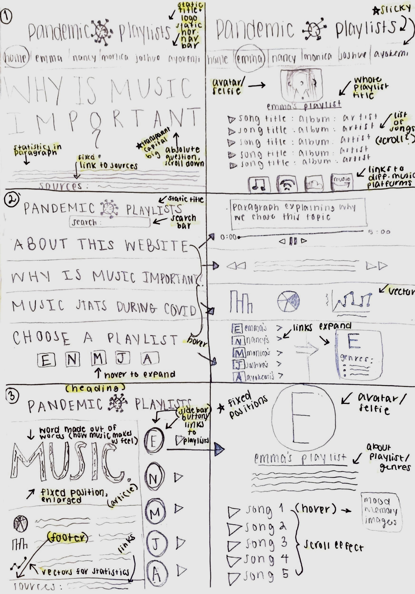

<!DOCTYPE html>
<html>
<head>
    <title>Lab 21: 2nd Draft Team Project Sketches</title>
    <link rel="stylesheet" type="text/css" href="css/lab.css"
</head>
</html>

    <div id="content">
<br>
  <h1>Lab twenty one: second draft team project sketches</h1>
<br>
<br>
    <div id="purpose">
	<h1>Purpose</h1>
	     <p>The purpose of this lab was to further develop our last prototypes into three concise
       ideas we have for a finalized website model. We gathered feedback from our teams and took
       the most favored concepts given to us as well as went more into depth with layouts and
       positioning of the html.
       <br>
       <br>
          <i>The feedback given to me by my team based off our first draft sketches were as followed:</i>
       <li>What worked <u>best</u> was my third sketch entitled "pick a playlist" with squared icons of our avatars.
           When you click an avatar, this would lead you to that specific playlist. This was favored because
           it is fun, interactive, and simplistic in design.
       <br>
       <br>
       <li>Of all my sketches, the <u>direction</u> we want to move in was my idea mentioned above. From this we must figure
         out what kind of avatar we want of ourselves (animated, our initials, or a selfie of us) as well as if it will
         be a button or an image leading to the specific link as we learned in one of our first labs in class. Also, would
         we want to include any other information underneath each playlist's icon (i.e. genre, moods, artists, about us) or
         just stick to the simple avatar and have it be empty in that aspect until redirected to that playlist.
        <br>
        <br>
      <li>What could be <u>improved</u> and further developed is a part of my 5th sketch. My team was in favor of the vector graphics
        for showcasing statistics. As we not only want to have personalized playlists but an educational background with how music
        not only helps us but how it affected the charts during the pandemic it would be visually appealing and easiest to understand
        through pie charts or bar graphs rather than sentences and paragraphs.
</p>
    </div>
<br>
<br>
    <div id="challenges">
  <h1>Challenges</h1>
			 <p>The challenges I encountered were mainly distinguishing which positioning would look best for
        each of my elements.</p>
     </div>
<br>
<br>
    <div id="results">
	<h1>Results</h1>
	<h3>Look below for my final sketches!</h3>
			 <p>I was successfuly able to create 9 sketches of 3 different prototype ideas for the final website.
        My most favored idea is the last design with a flexbox layout and individualized links in a sidebar
        to lead to our playlists.</p>
    </div>
<br>
<br>
<br>
    
<br>
<br>
<br>
    <a href="../index.html">back to my homepage</a> OR <a href="css/lab.css">check out my web css</a>
<br>
<br>
